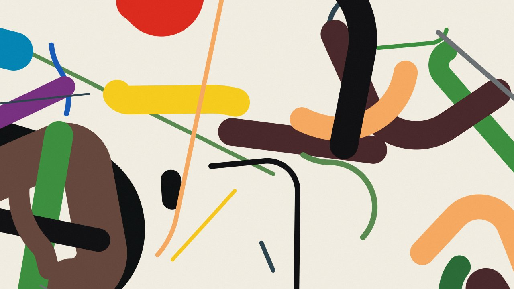
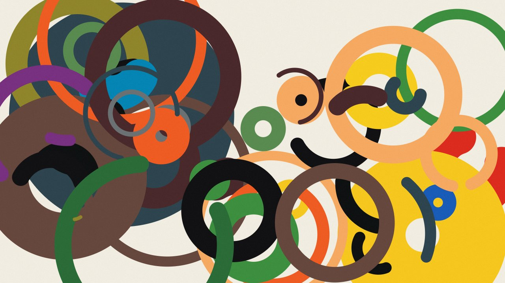
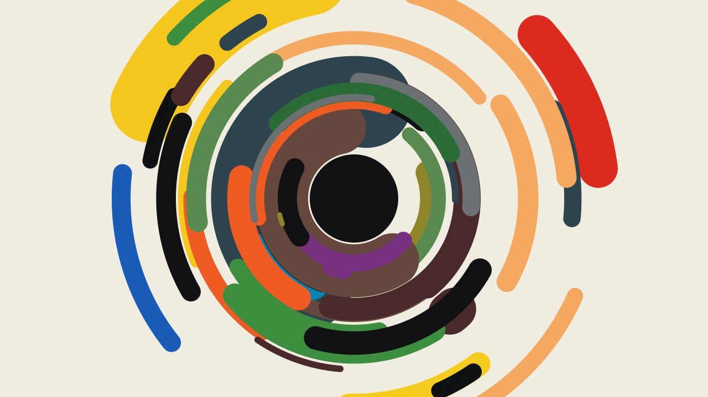

An hour-long live audiovisual installation by Matěj Moravec, inspired by the Lines series of the Czech painter Zdeněk Sýkora. Live sound by Nathan Solo.

Linear Compositions is inspired by the Lines series of Zdeněk Sýkora (1920–2011), a pioneer of computer-aided art. It reinterprets his method of rules and chance in real time, with original compositions generated live and shaped by sound. In 1973 Sýkora began his Lines series: tangled, colourful lines that look spontaneous, but whose course, width, colour and turns were all set by chance, through random numbers and computer programs, and then painted by hand.
Linear Compositions asks how such lines might move. Lines draw themselves across the screen, curve, cross and erase themselves. They weave into grids, circle a centre, run through tunnels and bounce off the edges of the frame, across sixteen chapters that flow into one another over the course of an hour.
Live audio is analysed in real time, and its low, middle and high frequencies shape the thickness of every line. Deep sounds swell the heavy strokes, mid-range tones move the medium ones, and hi-hats and other bright sounds pulse through the finest lines. The compositions stay true to Sýkora's rules of chance, and the sound in the room makes them breathe.


© Matěj Moravec, 2026. Original generative compositions; no works by Zdeněk Sýkora are reproduced. High-resolution images and video on request.
Matěj Moravec, visuals · matejmoravec.com
Nathan Solo, live sound · nathansolo.com · solo.catalogue@gmail.com